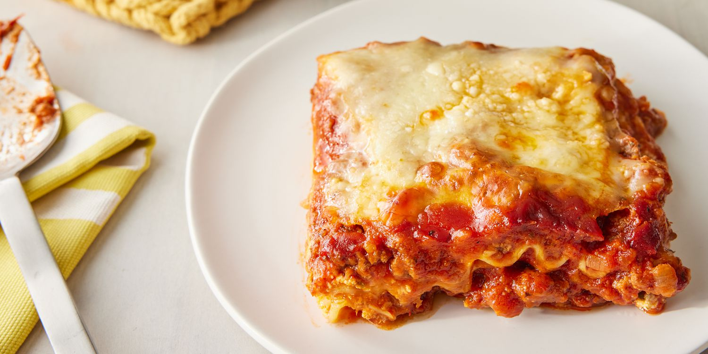

Lasagna

Finished product
This recipe has simple ingredients but tons of flavor with a creamy ricotta mixture, savory meat sauce, and lots of mozzarella cheese.
Ingredients:
- Cheese
- Ground meat
- Lasagna noodles
Steps:
- Spoon meat sauce on the bottom of a lightly greased casserole dish. Add 4 boiled lasagna noodles (or use no-boil or fresh noodles). Spread 1/3 of the ricotta cheese mixture on top. Add 1.5 cups of meat sauce.
- Repeat the same layers two more times.
- Top with mozzarella cheese. Cover and bake at 375° for 30 minutes. Remove cover and bake for 15 more minutes. Broil at the end if desired. Let it rest for 15 minutes prior to serving with Garlic Bread With Cheese.